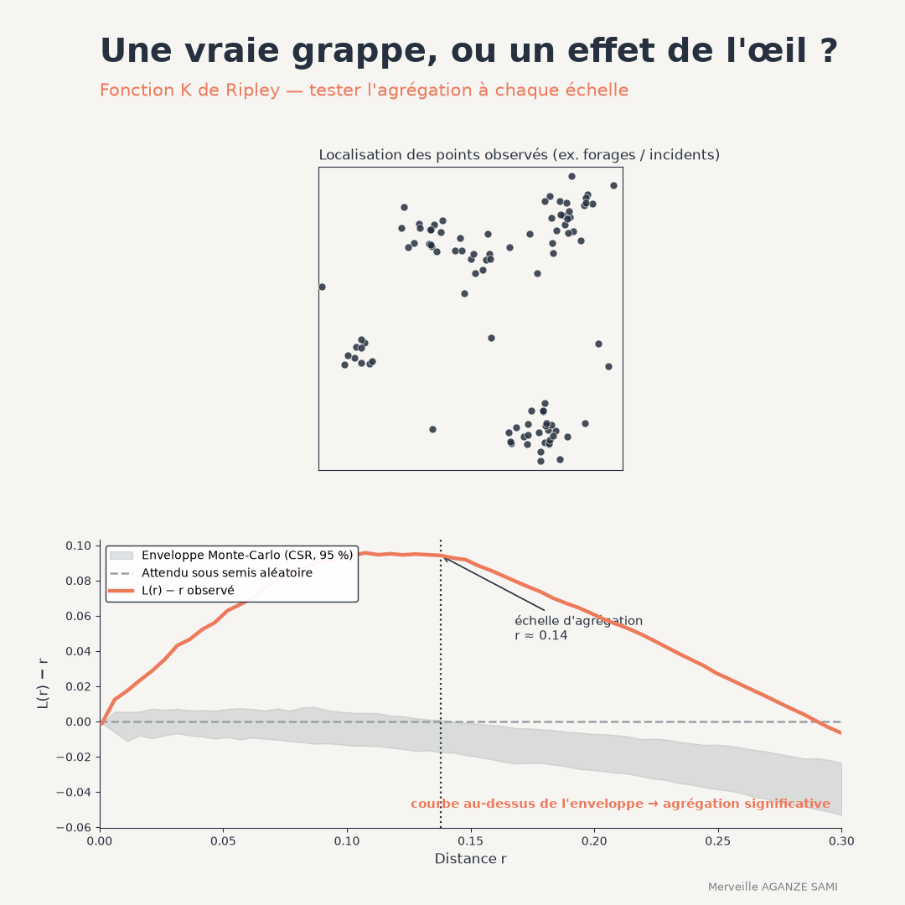

Reading a map of points — boreholes, reported incidents, beneficiary households, disease cases — frequently leads to identifying clusters and drawing operational conclusions. This reading runs into a well-established property of visual perception: an entirely random distribution also produces apparent clumps, often convincing ones.
The question an analysis must answer is therefore not whether clusters are visible, but whether their intensity exceeds what a structureless distribution would produce, and at what distance that departure appears.
1. What the K function measures
The K function is defined, for a given distance, as the average number of points lying within that distance of any point in the pattern, scaled by the overall intensity of the pattern. It therefore describes neighbourhood structure at all scales simultaneously, not at one (Ripley, 1976).
Under complete spatial randomness, this quantity takes a known theoretical value, proportional to the area of the disc of the radius considered. Comparing observed with theoretical values yields the diagnosis: a higher value indicates more neighbours than expected — clustering; a lower value indicates a more regular arrangement — dispersion (Ripley, 1977).
The L transformation. The K function grows with the square of distance, which makes graphical reading awkward and the variance uneven across scales. A standard transformation stabilises that variance and reduces the theoretical value to a straight line, or to a horizontal line once distance is subtracted. Departure from this reference can then be read directly, at every distance.
2. The simulation envelope
A difference between observed and theoretical curves is not enough to conclude: one must know what departure a genuinely random pattern would produce. The procedure simulates a large number of patterns under the null model, computes the function for each, and derives a band of plausible values. The observed curve is compared with that band.
This construction calls for an important caveat. An envelope computed distance by distance is not a valid test of the whole curve: since the curve is examined over a continuous range of distances, the probability that it leaves the envelope at least once far exceeds the stated level. So-called global envelopes, or tests based on an aggregated deviation, correct this defect and should be preferred where a formal conclusion is sought (Baddeley et al., 2014).
3. Edge effects
A point near the boundary of the study area has part of its neighbourhood outside the observed domain. Without correction, the neighbour count is systematically understated for such points, biasing the function towards an appearance of dispersion. Several corrections exist — weighting by the included disc fraction, translation correction, reduced-window method — and applying them is not optional once the area is small relative to the distances examined (Diggle, 2013).
4. Choosing the null model
This is the most decisive point, and the most often neglected. Complete spatial randomness assumes constant intensity across the whole study area. Yet phenomena monitored in project settings almost never meet this condition: incidents occur where people live, boreholes are sited where villages exist.
Spatially varying intensity then produces apparent clustering reflecting no interaction between points, only the underlying distribution of population or infrastructure. Two responses are available: use a version of the function that admits non-constant intensity, estimated separately — which connects with the approach set out in the article on kernel density estimation — or construct a null model that explicitly reflects the expected distribution process (Wiegand & Moloney, 2004).
This decision must precede the computation. A clustering result obtained under an unsuitable null model carries no information about the phenomenon studied.
5. What the curve contributes to a decision
The main operational contribution lies in identifying a scale. The distance at which departure from the reference peaks indicates the reach of the clustering process: it is the scale at which events genuinely group. This information directly informs how a response is sized — the radius of an intervention zone, the mesh of a surveillance system, the spacing of service points.
It also distinguishes situations that mapping alone conflates: a pattern may be clustered at small scale and regular at large scale, a frequent configuration where local clumps are evenly spread across the territory. Related functions, based on distances between points rather than on a cumulative count, refine this reading (Baddeley et al., 2015).
Key points
- A random distribution produces visually convincing clumps
- The K function compares the observed neighbourhood with a reference, at all distances
- An envelope computed point by point is not a valid test of the whole curve
- Edge corrections are required once the area is small relative to the distances studied
- The null model is the main decision: non-constant intensity creates apparent clustering
A map shows where the points are. Analysing their structure shows whether their arrangement has a regularity, and at what scale. It is this second piece of information that allows a response to be sized.
References
- Baddeley, A., Rubak, E., & Turner, R. (2015). Spatial Point Patterns: Methodology and Applications with R. Boca Raton: CRC Press.
- Baddeley, A., Diggle, P. J., Hardegen, A., Lawrence, T., Milne, R. K., & Nair, G. (2014). On tests of spatial pattern based on simulation envelopes. Ecological Monographs, 84(3), 477–489. doi.org/10.1890/13-2042.1
- Diggle, P. J. (2013). Statistical Analysis of Spatial and Spatio-Temporal Point Patterns (3rd ed.). Boca Raton: CRC Press. doi.org/10.1201/b15326
- Ripley, B. D. (1976). The second-order analysis of stationary point processes. Journal of Applied Probability, 13(2), 255–266. doi.org/10.2307/3212829
- Ripley, B. D. (1977). Modelling Spatial Patterns. Journal of the Royal Statistical Society: Series B, 39(2), 172–212. doi.org/10.1111/j.2517-6161.1977.tb01615.x
- Wiegand, T., & Moloney, K. A. (2004). Rings, circles, and null-models for point pattern analysis in ecology. Oikos, 104(2), 209–229. doi.org/10.1111/j.0030-1299.2004.12497.x

Merveille Aganze Sami
MEL & Database Management Advisor. 9+ years of experience in monitoring & evaluation, GIS and digitalization with international organizations (GIZ, Enabel) in DR Congo.
A point pattern to analyse?
Get in touch